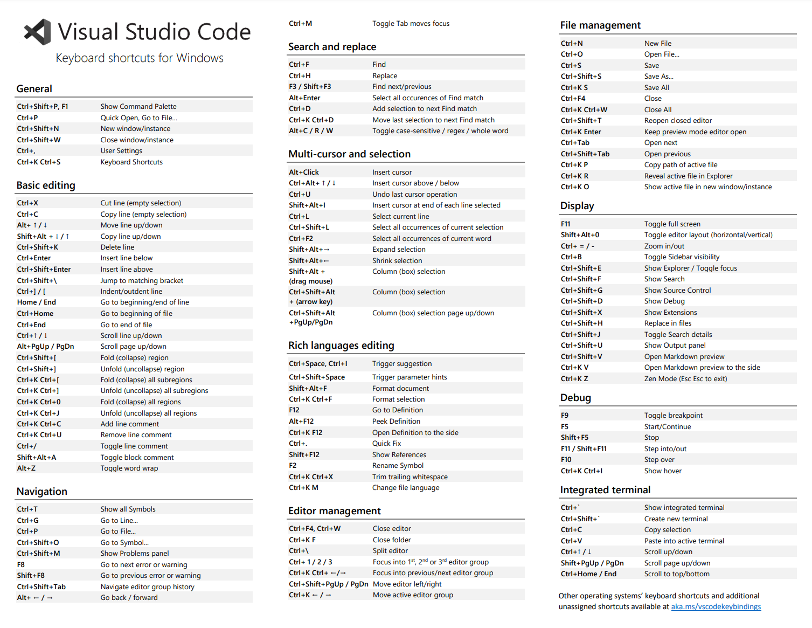

| 键位 | 说明 |
|---|---|
Ctrl+K 后 Ctrl+S |
快捷键列表 |
Ctrl+Shift+P 或者 F1 |
显示命令面板 |
Ctrl+P |
打开或转到文件... |
Ctrl+Shift+N |
新建窗口或实例... |
Ctrl+Shift+W |
关闭窗口或实例... |
Ctrl+. |
编辑器设置 |
| 键位 | 说明 |
|---|---|
Ctrl+X |
剪切（明确选中时）/ 剪切光标所在行（未明确选中时） |
Ctrl+C |
复制（明确选中时）/ 复制光标所在行（未明确选中时） |
Alt+↑ |
将当前行向上移动 |
Alt+↓ |
将当前行向下移动 |
Shift+Alt+↑ |
向上复制当前行 |
Shift+Alt+↓ |
向下复制当前行 |
Ctrl+Shift+\ |
跳转到与之相匹配的括号 |
Ctrl+] |
增加缩进量 |
Ctrl+[ |
减少缩进量 |
Home |
转到行首 |
End |
转到行尾 |
Ctrl+↑ |
页面向上滚动1行 |
Ctrl+↓ |
页面向下滚动1行 |
Alt+PageUp |
页面向上滚动1页 |
Alt+PageDown |
页面向下滚动1页 |
Ctrl+Shift+[ |
折叠该区域 |
Ctrl+Shift+] |
展开该区域 |
Ctrl+K 后 Ctrl+[ |
折叠所有子区域 |
Ctrl+K 后 Ctrl+] |
展开所有子区域 |
Ctrl+K 后 Ctrl+0 |
折叠所有区域 |
Ctrl+K 后 Ctrl+] |
展开所有区域 |
Ctrl+K 后 Ctrl+C/U或者Ctrl+/ |
添加/去除行注释 |
Shift+Alt+A |
添加块注释框架，光标定位到注释本体位置 |
Alt+Z |
切换自动换行 |
更多的（官网英文版）如下： 